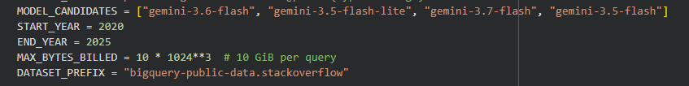
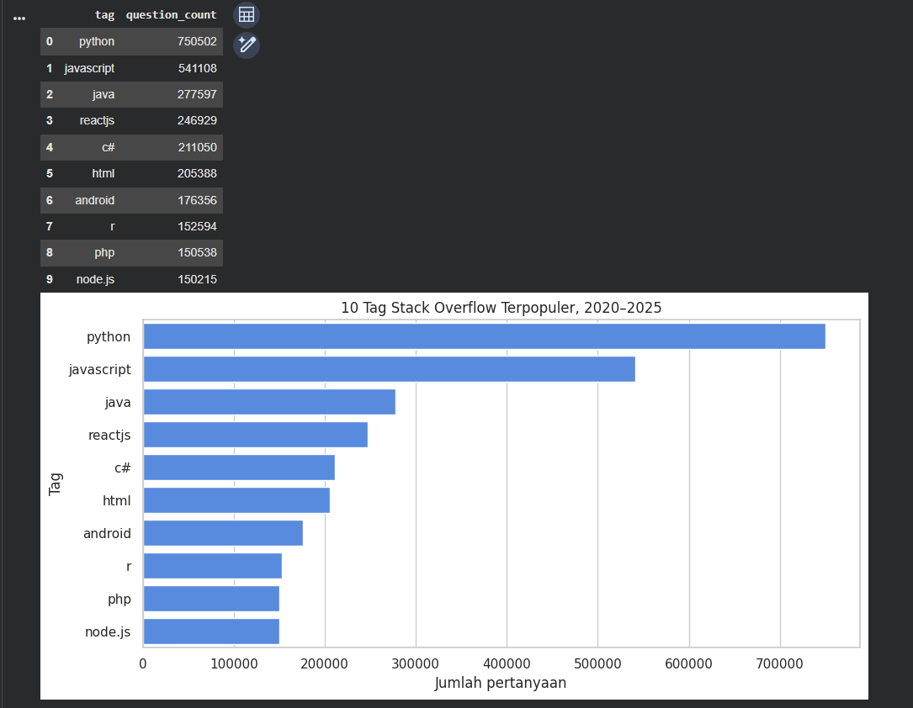
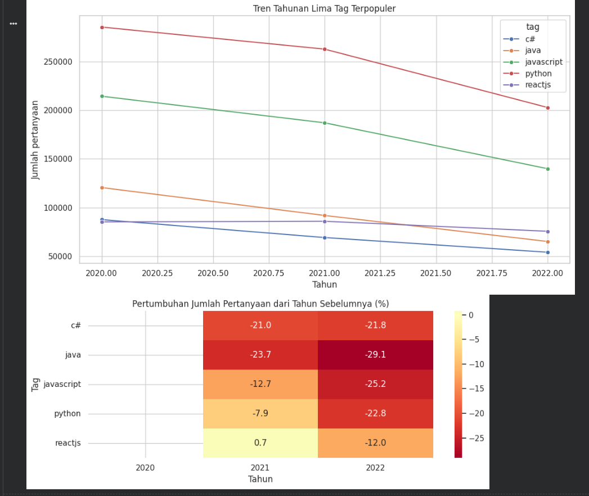
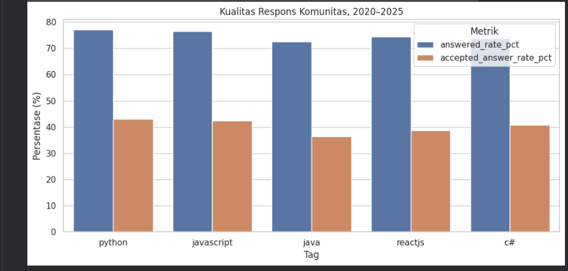
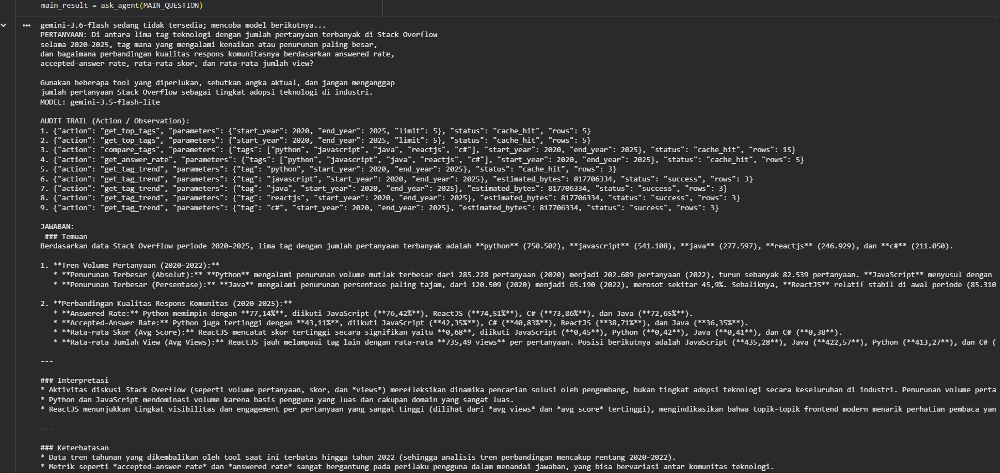
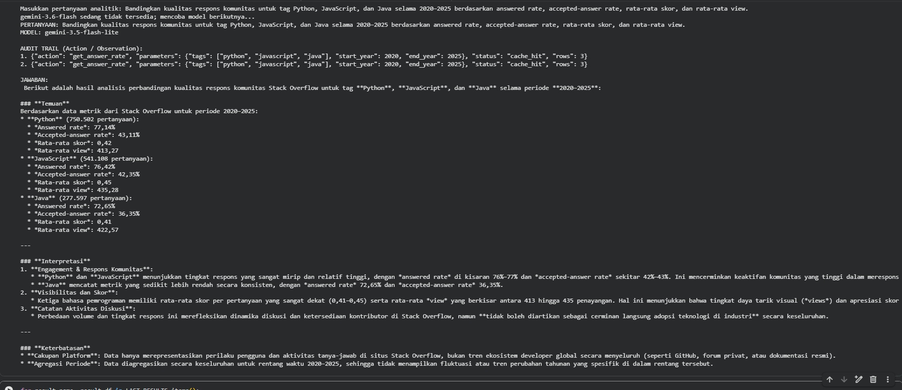

Proyek ini membangun Data Analytics ReAct Agent yang menerima pertanyaan dalam bahasa alami, memilih tindakan analitik, mengambil data Stack Overflow dari BigQuery, lalu menyusun jawaban berdasarkan observation aktual.
Data berasal dari bigquery-public-data.stackoverflow.posts_questions. Satu baris mewakili satu pertanyaan Stack Overflow. Karena satu pertanyaan dapat memiliki beberapa tag, agregasi antartag tidak bersifat saling eksklusif.
| Pertanyaan pengguna | → | Gemini memilih action | → | Tool tervalidasi + dry run | → | BigQuery observation | → | Jawaban berbasis data |
Agent hanya memiliki empat tool: get_top_tags, get_tag_trend, compare_tags, dan get_answer_rate. Tool membatasi tahun, nama tag, jumlah hasil, dataset, dan jenis query. Setiap query melewati dry run dan batas 10 GiB.
MODEL_CANDIDATES = [
"gemini-3.6-flash",
"gemini-3.5-flash-lite",
"gemini-3.7-flash",
"gemini-3.5-flash",
]
Jika sebuah model menghasilkan 404, 429, 503, atau 504, agent mencoba model berikutnya. Pada eksekusi yang didokumentasikan, Gemini 3.6 Flash sedang tidak tersedia dan proses berhasil diteruskan oleh Gemini 3.5 Flash-Lite.
dry_config = bigquery.QueryJobConfig(
dry_run=True,
use_query_cache=False,
query_parameters=query_parameters,
)
dry_job = bq_client.query(sql, job_config=dry_config)
if dry_job.total_bytes_processed > MAX_BYTES_BILLED:
raise RuntimeError("Query melebihi batas biaya")
Prompt utama menghasilkan sembilan event tool. Agent memperoleh lima tag teratas, membandingkan tren, mengukur kualitas respons, lalu memeriksa tren masing-masing tag. Beberapa hasil berstatus cache_hit, sehingga query identik tidak dijalankan ulang.
| 9 action / observation |
5 tag utama |
10 GiB batas per query |

| Peringkat | Tag | Jumlah pertanyaan |
|---|---|---|
| 1 | python | 750.502 |
| 2 | javascript | 541.108 |
| 3 | java | 277.597 |
| 4 | reactjs | 246.929 |
| 5 | c# | 211.050 |
| 6 | html | 205.388 |
| 7 | android | 176.356 |
| 8 | r | 152.594 |
| 9 | php | 150.538 |
| 10 | node.js | 150.215 |
Python menempati peringkat pertama dan memiliki sekitar 1,39 kali jumlah pertanyaan JavaScript. Hasil ini mengukur aktivitas diskusi Stack Overflow, bukan pangsa pasar teknologi.

| Tag | 2020 | 2021 | 2022 | Perubahan 2020–2022 |
|---|---|---|---|---|
| python | 285.228 | 262.585 | 202.689 | −28,94% |
| javascript | 214.248 | 186.980 | 139.880 | −34,71% |
| java | 120.509 | 91.898 | 65.190 | −45,90% |
| c# | 87.658 | 69.226 | 54.166 | −38,21% |
| reactjs | 85.310 | 85.945 | 75.674 | −11,30% |

| Tag | Answered rate | Accepted-answer rate |
|---|---|---|
| python | 77,14% | 43,11% |
| javascript | 76,42% | 42,35% |
| reactjs | 74,51% | 38,71% |
| c# | 73,86% | 40,83% |
| java | 72,65% | 36,35% |
Python memiliki answered rate dan accepted-answer rate tertinggi. C# menarik karena accepted-answer rate-nya lebih tinggi daripada ReactJS meskipun answered rate-nya sedikit lebih rendah. Pada hasil detail tiga tag, JavaScript memiliki rata-rata jawaban 1,15, skor 0,45, dan view 435,28; Python memiliki 1,12 jawaban, skor 0,42, dan 413,27 view; Java memiliki 1,03 jawaban, skor 0,41, dan 422,57 view.

ReAct Agent yang baik tidak hanya menghasilkan teks. Model perlu dibatasi oleh tool yang jelas, input harus divalidasi, biaya query perlu diperiksa sebelum eksekusi, dan setiap kesimpulan harus dapat ditelusuri ke observation. Fallback model dan cache juga diperlukan agar alur tetap stabil ketika layanan LLM sibuk atau kuota terbatas.
Total Python dari hasil top tags, penjumlahan data tren, dan query kontrol manual seluruhnya sama, yaitu 750.502. Ini mengonfirmasi konsistensi agregasi utama.

